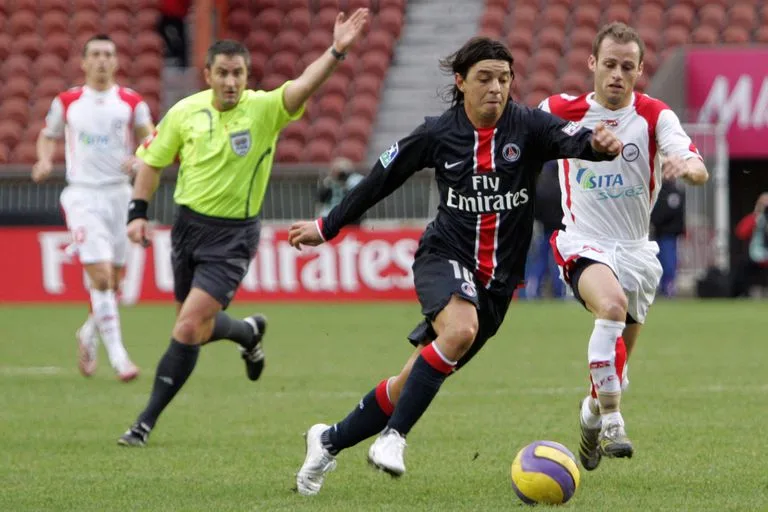
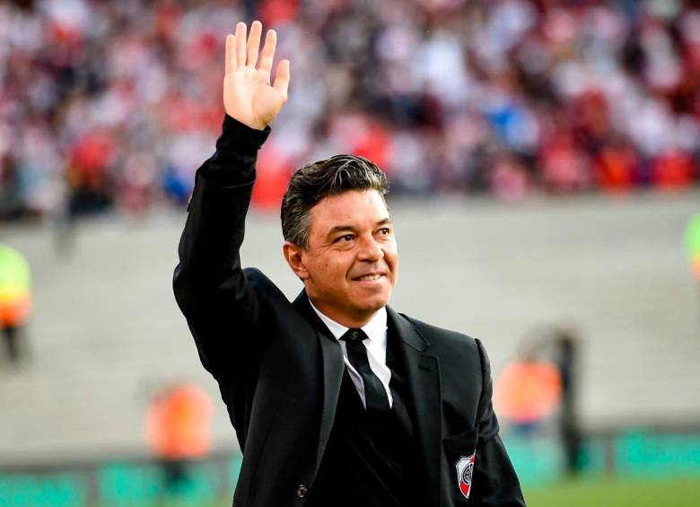

Marcelo Daniel Gallardo
Gallardo jugando en el Paris Saint-Germain
Gallardo jugo un año en el club Frances, desde 2007 al 2008. Su debut en el conjunto francés ocurrió el 7 de enero de 2007, en la goleada por 3:0 frente al Nîmes. Gallardo mostró un buen rendimiento a lo largo del encuentro, válido por los treintaidosavos de final de la Copa de Francia.
Marcelo Daniel Gallardo Como director tecnico de River Plate
Marcelo Gallardo fue director tecnico del club Millonario, desde 2014 hasta el año 2022. El 30 de mayo de 2014, tras la abrupta renuncia de Ramón Díaz, el secretario técnico de River Plate, Enzo Francescoli, confirmó a Gallardo como nuevo entrenador del club, quien en conferencia de prensa el 6 de junio asumió la conducción técnica y dirigió al club desde el segundo semestre del año.
Mejores goles
En este video podemos apreciar, sus mejores goles en algunos equipos en los cuales jugo.